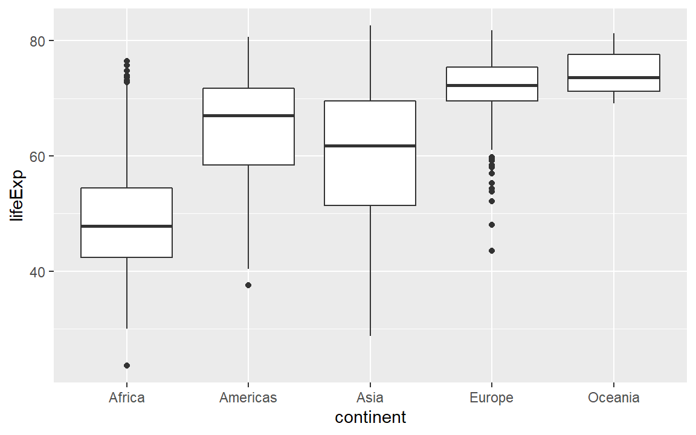
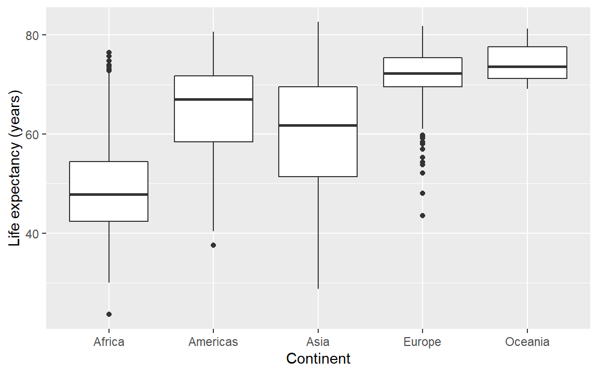
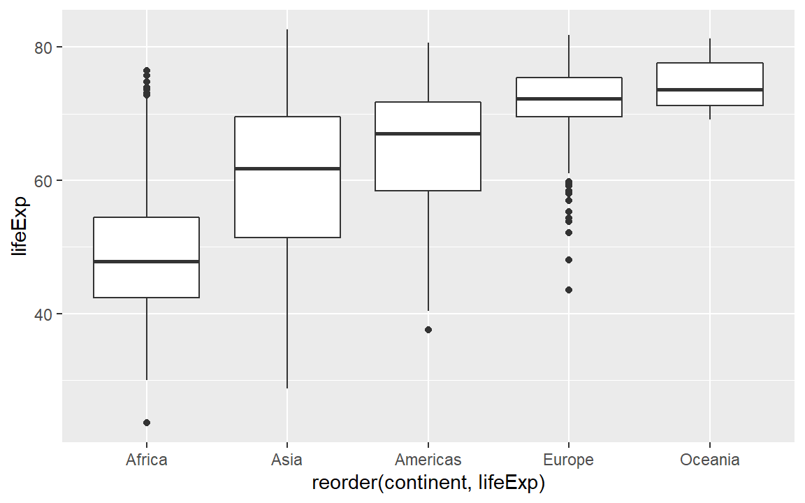
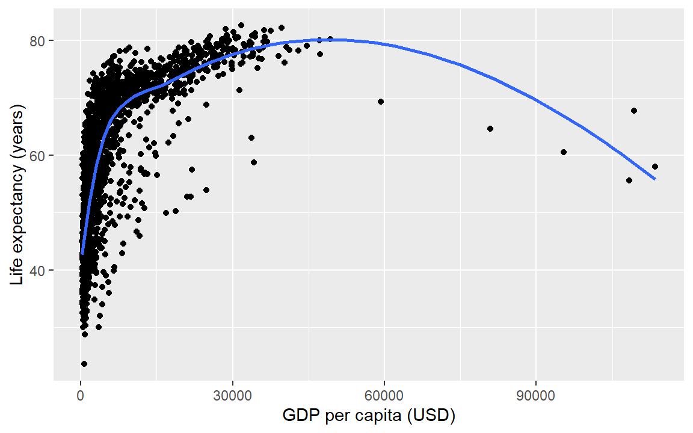
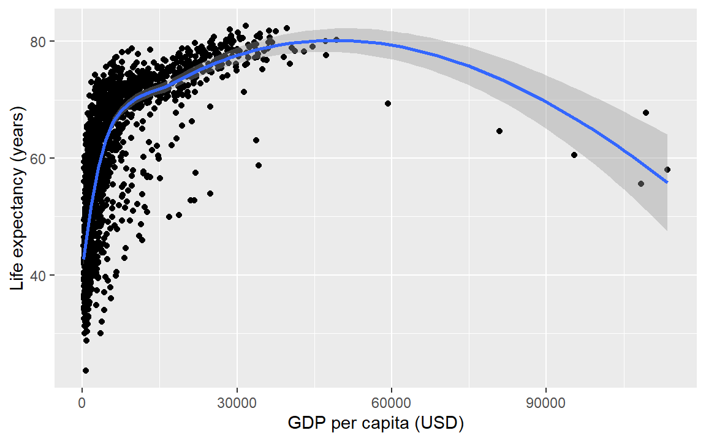
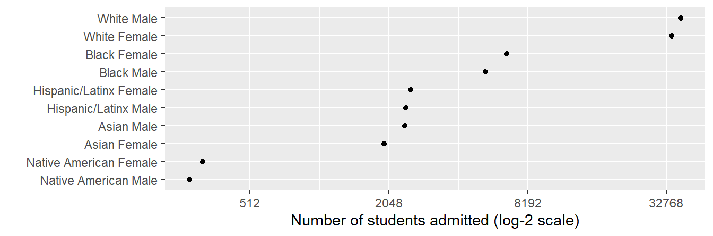

6 Graph basics

Decline by Randall Munroe (xkcd.com) is licensed under CC BY-NC 2.5
6.1 Introduction
This tutorial is an introduction to ggplot2 adapted from Chapter 3 from [12]. If you already have R experience, you might still want to browse this section in case you find something new.
Prerequisites should be completed before proceeding. After that, the tutorial should take about an hour.
- As you work through the tutorial, type a line or chunk of code then File > Save and run the script.
- Confirm that your result matches the tutorial result.
- The exercises give you chance to practice your new skills to learn by doing (but you knew that already)!
6.1.1 Download prepared data
Data sets used in the exercises have been prepared and saved in a .zip file in the workshop repository. The data are in .rds format, a native R format for single files that preserves variable types, including the order (if any) of factors.
Download the prepared_data.zip file from the workshop website with the following code.
- You can copy and paste the code to the Console; you only have to run this once.
- The destination file assumes you have a
datadirectory in your project.
zip_url <- paste0("https://github.com/MIDFIELDR/2021-asee-workshop/",
"raw/main/data/prepared_data.zip")
download.file(zip_url, destfile = "data/prepared_data.zip")If the download is unsuccessful
- Navigate to the
prepared_data.ziprepository. - Click Download
Once the download is successful
- Extract the compressed files from the downloaded .zip file.
- Manually move the files into the top level of the workshop
datafolder. Your workshop data directory should now contain:
data\
hours_per_term.rds
sat.rds
stickiness.rds
student_demogr.rds6.1.2 Start a new script
Create a new script for this tutorial.
- See [Open an R script] if you need a refresher on creating, saving, and running an R script.
- At the top of the script add a minimal header and install and load the packages indicated.
# Graph basics
# Name
# Date
# Packages used in this tutorial
library("midfieldr")
library("midfielddata")
library("data.table")
library("ggplot2")
library("gapminder")
# Optional code to control data.table printing
options(
datatable.print.nrows = 10,
datatable.print.topn = 5,
datatable.print.class = TRUE
)
# Load midfielddata data sets to use later
data(student)
data(term) If you get an error like this one after running the script,
Error in library("gapminder") : there is no package called 'gapminder'then the package needs to be installed. If you need a refresher on installing packages, see Install CRAN packages. Once the missing package is installed, you can rerun the script.
6.2 Expected data structure
Data for analysis and graphing are often laid out in “block record” or “long” form with every key variable and response variable in their own columns [13]. Database designers call this a “denormalized” form; many R users would recognize it as the so-called “tidy” form [14].
We use this form regularly for preparing data for graphing using the ggplot2 package. The gapminder data we’re using in this tutorial is in block-record form. To view its help page, run
library("gapminder")
? gapminder# Convert the data frame to a data.table structure
gapminder <- data.table(gapminder)And we can just type its name to see a few rows. Note at the top of each column under the column name, the class of the variable is shown: factor <fctr>, integer <int>, and double-precision <num>.
gapminder
#> country continent year lifeExp pop gdpPercap
#> <fctr> <fctr> <int> <num> <int> <num>
#> 1: Afghanistan Asia 1952 28.801 8425333 779.4453
#> 2: Afghanistan Asia 1957 30.332 9240934 820.8530
#> 3: Afghanistan Asia 1962 31.997 10267083 853.1007
#> 4: Afghanistan Asia 1967 34.020 11537966 836.1971
#> 5: Afghanistan Asia 1972 36.088 13079460 739.9811
#> ---
#> 1700: Zimbabwe Africa 1987 62.351 9216418 706.1573
#> 1701: Zimbabwe Africa 1992 60.377 10704340 693.4208
#> 1702: Zimbabwe Africa 1997 46.809 11404948 792.4500
#> 1703: Zimbabwe Africa 2002 39.989 11926563 672.0386
#> 1704: Zimbabwe Africa 2007 43.487 12311143 469.70936.2.1 Exercise
- Examine the
studentdata from midfielddata. (Type its name in the console.) - How many variables? How many observations?
- How many of the variables are numeric? How many are character type?
- Is the data set in block-record form?
- Check your work by comparing your result to the
studenthelp page (link below).
Help pages for more information:
6.3 Anatomy of a graph
ggplot() is a our basic plotting function. The data = ... argument assigns the data frame. The plot is empty because we haven’t mapped the data to coordinates yet.
ggplot(data = gapminder)Next we use the mapping argument mapping = aes(...) to assign variables (column names) from the data frame to specific aesthetic properties of the graph such as the x-coordinate, the y-coordinate color, fill, etc.
Here we map continent (a categorical variable) to x and life expectancy (a quantitative variable) to y. To reduce the number of times we repeat lines of code, we can assign a name (life_gdp) to the empty graph to which we can add layers later.
# Demonstrate aesthetic mapping
life_exp <- ggplot(data = gapminder, mapping = aes(x = continent, y = lifeExp))To reduce typing, the first two arguments data and mapping are often used without naming them explicitly, e.g.,
# Demonstrate implicit data and mapping arguments
life_exp <- ggplot(gapminder, aes(x = continent, y = lifeExp))If we print the graph by typing the name of the graph object (everything in R is an object), we get a graph with a range on each axis (from the mapping) but no data shown. We haven’t specified the type of visual encoding we want.
# Examine the result
life_exp
A box-and-whisker plot (or box plot) is designed for displaying the distribution of a single quantitative variable. The visual encoding is specified using the geom_boxplot() layer, where a “geom” is a geometric object. The geom_boxplot() function requires the quantitative variable assigned to y and the categorical variable (if any) to x.
# Demonstrate adding a geometric object
life_exp <- life_exp +
geom_boxplot()
# Examine the result
life_expNotice that the default axis labels are the variables names from the data frame. We can edit those with another layer
# Demonstrate editing axis labels
life_exp <- life_exp +
labs(x = "Continent", y = "Life expectancy (years)")
# Examine the result
life_exp
Next, we often want the categorical variable ordered by the quantitative variable instead of alphabetically. Because continent is a factor, we can use the reorder() function inside the aes() argument.
# Demonstrate reordering a categorical variable
life_exp +
aes(x = reorder(continent, lifeExp), y = lifeExp)
Summary. The basics steps for building up the layers of any graph:
- assign the data frame
- map variables (columns names) to aesthetic properties
- choose geoms
- adjust scales, labels, ordering, etc.
Lastly, while we separate the layers as we work to focus on that specific layer, the layers can always be written in a single code chunk, e.g,
ggplot(gapminder, aes(x = reorder(continent, lifeExp), y = lifeExp)) +
geom_boxplot() +
labs(x = "Continent", y = "Life expectancy (years)")6.3.1 Exercise
- Examine the
termdata set from midfielddata. - Create a boxplot of the hours per term quantity conditioned by the student level.
- What is the rational for leaving the categorical variable in its native order?
- Check your work by comparing your result to the graph below.

Help pages for more information:
6.4 Layer: points
A two-dimensional scatterplot reveals the strength of the relationship between two quantitative variables. The ggplot geom for scatterplots is geom_point(). To illustrate a scatterplot, we graph life expectancy as a function of GDP.
life_gdp <- ggplot(gapminder, aes(x = gdpPercap, y = lifeExp)) +
geom_point() +
labs(x = "GDP per capita (USD)", y = "Life expectancy (years)")
life_gdpHelp pages for more information:
6.5 Layer: smooth fit
Suppose you wanted a smooth fit curve, not necessarily linear. Add a geom_smooth() layer. The name loess (pronounced like the proper name Lois) is a nonparametric curve-fitting method based on local regression.
life_gdp +
geom_smooth(method = "loess", se = FALSE)The se argument controls whether or not the confidence interval is displayed. Setting se = TRUE yields,
life_gdp +
geom_smooth(method = "loess", se = TRUE)
For a linear-fit layer, we change method to lm (short for linear model). The linear fit is not particularly good in this case, but now you know how to do one.
life_gdp +
geom_smooth(method = "lm", se = TRUE)
Help pages for more information:
6.5.1 Exercise
A data set has been extracted from the midfieldr student table with a sample of 3000 student SAT scores. These data, sat.rds are part of the prepared data from the .zip files you downloaded earlier. Here we read the data in using readRDS().
# Prepared data from the downloaded zip file
sat <- readRDS("data/sat.rds")- Use the
satdata and create a scatterplot of verbal scoressat_verbalas a function of math scoressat_math.
- Add a loess fit.
- Check your work by comparing your result to the graph below.
6.6 Layer: scale
We have orders of magnitude differences in the GDP per capita variable. To confirm, we can create a summary() of the gdpPercap variable. The output shows that the minimum is 241, the median 3532, and the maximum 113,523.
# statistical summary of one variable
summary(gapminder[, gdpPercap])
#> Min. 1st Qu. Median Mean 3rd Qu. Max.
#> 241.2 1202.1 3531.8 7215.3 9325.5 113523.1In exploring a graph like this, it might be useful to add a layer that changes the horizontal scale to a log-base-10 scale.
life_gdp <- life_gdp +
scale_x_continuous(trans = "log10") Update the axis labels,
life_gdp <- life_gdp +
labs(x = "GDP per capita, USD (log10 scale)",
y = "Life expectancy (years)")
life_gdp # display the graph
In summary, all the layers could have been be coded at once, for example,
ggplot(gapminder, aes(x = gdpPercap, y = lifeExp)) +
geom_point() +
scale_x_continuous(trans = "log10") +
labs(x = "GDP per capita, USD (log10 scale)",
y = "Life expectancy (years)")With all the layers in one place, we can see that we’ve coded all the basic steps, that is,
- assign the data frame
- map variables (columns names) to aesthetic properties
- choose geoms
- adjust scales, labels, ordering, etc.
6.6.1 Exercise
The prepared data you downloaded earlier includes the file student_demogr.rds. The data in this file is a summary of the midfieldr student table with the number of students by race/ethnicity and sex, omitting “International” and “Other/Unknown” race values. Again, we read the data in using readRDS().
# Prepared data from the downloaded zip file
student_demogr <- readRDS("data/student_demogr.rds")- Use the
student_demogrdata and reproduce the graph shown below.
- Use a log-base-2 scale.
- Omit the y-axis label by setting
y = ""in thelabs()argument.

Help pages for more information:
6.7 Mapping columns to aesthetics
Mappings in the aes() function of ggplot() can involve the names of variables (column s) only. So far, the only mappings we’ve used are from column names to an x or y aesthetic.
Another useful mapping is from a column name to the color argument, which then separates the data by the values of the categorical variable selected and automatically creates the appropriate legend.
Here we map the continent column to the color aesthetic, adding a third data variable to the display.
ggplot(gapminder, aes(x = gdpPercap, y = lifeExp, color = continent)) +
geom_point() +
scale_x_continuous(trans = "log10") +
labs(x = "GDP per capita, USD (log10 scale)",
y = "Life expectancy (years)")6.7.1 Exercise
The prepared data you downloaded earlier includes the file hours_per_term.rds. Again, we read the data using readRDS().
hours_per_term <- readRDS("data/hours_per_term.rds")- Use
hours_per_termdata to create a boxplot of hours per term as a function of level. - Add a third column name to
aes()to addsexby color to the graph. - Add the
coord_flip()layer to your graph to swap the position of the x, y coordinates to obtain a horizontal boxplot. - Check your work by comparing your result to the graph below.
Help pages for more information:
6.8 Layer: facets
In the earlier graph where we mapped continent to color, there was a lot of overprinting, making it difficult to compare the continents. Instead of using color to distinguish the continents, we can plot in different panels by continent.
The facet_wrap() layer separates the data into different panels (or facets). Like the aes() mapping, facet_wrap() is applied to a variable (column name) in the data frame.
life_gdp <- life_gdp +
facet_wrap(facets = vars(continent))
life_gdp # print the graphComparisons are facilitated by having the facets appear in one column, by using the ncol argument of facet_wrap().
life_gdp <- life_gdp + facet_wrap(facets = vars(continent), ncol = 1)
life_gdp # print the graph
In a faceted display, all panels have identical scales (the default) to facilitate comparison. Again, all the layers could have been be coded at once, for example,
ggplot(gapminder, aes(x = gdpPercap, y = lifeExp)) +
facet_wrap(facets = vars(continent), ncol = 1) +
geom_point() +
scale_x_continuous(trans = "log10") +
labs(x = "GDP per capita, USD (log10 scale)",
y = "Life expectancy (years)") 6.8.1 Exercise
The prepared data you downloaded earlier includes the file stickiness.rds. Again, we read the data using readRDS().
stickiness <- readRDS("data/stickiness.rds")- Use the
stickinessdata frame and plot stickiness (x-axis) as a function of race/ethnicity/sex (y-axis) and faceted by program.
- When that graph seems OK, add a third column name to
aes()to addsexby color to the graph. - Check your work by comparing your result to the graph below.
Help pages for more information:
6.9 Ordering panels and rows
Panels (facets) by default are nearly always ordered alphabetically. In most cases, ordering the panels by the data improves the display. Earlier, we used reorder() to order a set of boxplots. This function operates correctly on “factor” variables only.
A factor is special data structure in R for categorical variables. In a factor, the levels of the category—typically character strings—are known and fixed. However, factors are stored internally as integers—a critical design tool for meaningfully ordering the rows and panels of a display involving categorical variables.
In the gapminder data, the continent column is already a factors.
gapminder
#> country continent year lifeExp pop gdpPercap
#> <fctr> <fctr> <int> <num> <int> <num>
#> 1: Afghanistan Asia 1952 28.801 8425333 779.4453
#> 2: Afghanistan Asia 1957 30.332 9240934 820.8530
#> 3: Afghanistan Asia 1962 31.997 10267083 853.1007
#> 4: Afghanistan Asia 1967 34.020 11537966 836.1971
#> 5: Afghanistan Asia 1972 36.088 13079460 739.9811
#> ---
#> 1700: Zimbabwe Africa 1987 62.351 9216418 706.1573
#> 1701: Zimbabwe Africa 1992 60.377 10704340 693.4208
#> 1702: Zimbabwe Africa 1997 46.809 11404948 792.4500
#> 1703: Zimbabwe Africa 2002 39.989 11926563 672.0386
#> 1704: Zimbabwe Africa 2007 43.487 12311143 469.7093We can reorder the levels of the factor before graphing as follows,
gapminder[, continent := reorder(continent, lifeExp)]Then graph using much the same code chunk as before with one addition. We add the as.table = FALSE argument to the facet_wrap() function. “Table-order” of panels is increasing from top to bottom; “graph-order” increases (like a graph scale) from bottom to top.
ggplot(gapminder, aes(x = gdpPercap, y = lifeExp)) +
facet_wrap(facets = vars(continent), ncol = 1, as.table = FALSE) +
geom_point() +
scale_x_continuous(trans = "log10") +
labs(x = "GDP per capita, USD (log10 scale)",
y = "Life expectancy (years)") 6.9.1 Exercise
Continue using the stickiness data frame from the previous section.
- The
race_sexandprogramcolumns are factors. Order both factors by the stickiness variable. - Use
as.tableto impose “graph-order” on the panels. - Check your work by comparing your result to the graph below.

Help pages for more information:
6.10 Next steps
That concludes our brief introduction to graph basics using ggplot2. To continue, select your preferred next step in your progression.